Hands-on: running multi-modality simulations with VIP
This hands-on shows the main features used in VIP to run simulations.
Contents:
Exercise 1: account creation (5 min)
- Connect to http://vip.creatis.insa-lyon.fr and sign-in. Your home page should look exactly like this, with a "General", "SimuBloch" and "Simulators - tutorial" section:
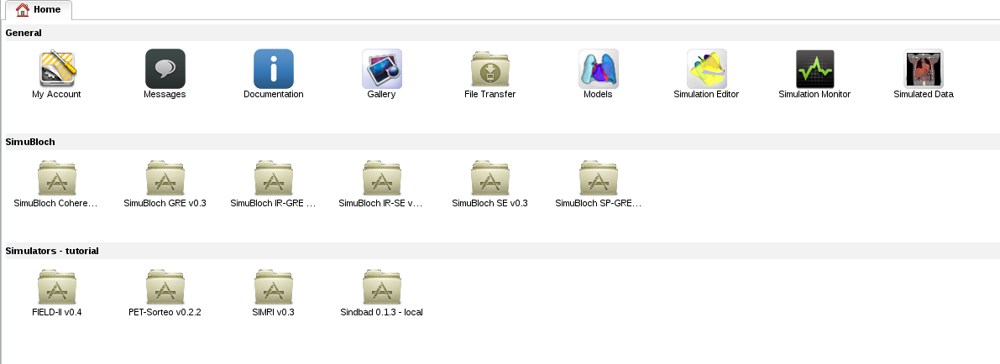
- If this is not the case and you don't have a VIP account: click on "Sign-in" on the welcome page, fill in the form and ask for a "Tutorial" account. You should receive an activation code soon after:
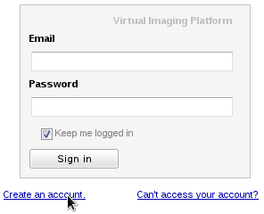
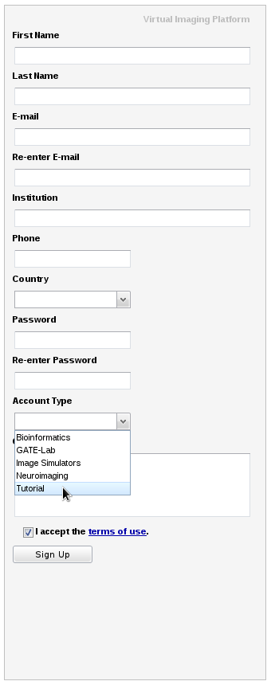
- If you already have a VIP account, but some applications do not show on the home page, click on "My account" and join group "Tutorial", then refresh the portal:

Back to top
VIP provides a file transfer interface to storage distributed on the European Grid Infrastructure.
It is used to store inputs and results of the simulations.
- In your home, open the "File Transfer" tool"
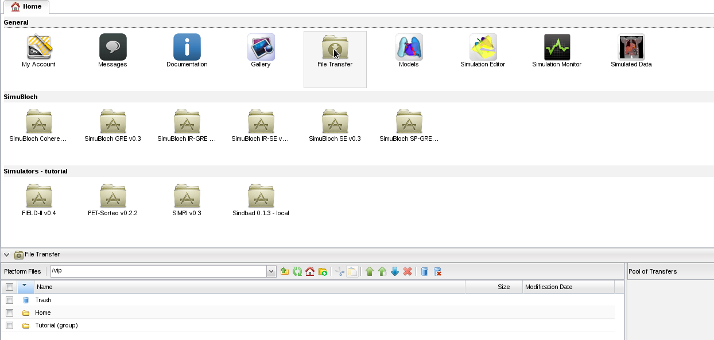
- You can access 2 directories: "Home" is private, and "Tutorial (group)" is shared among group members.
- Open directory "Tutorial (group)" and download file "hello.txt" using the contextual (right-click) menu or the selection box and :
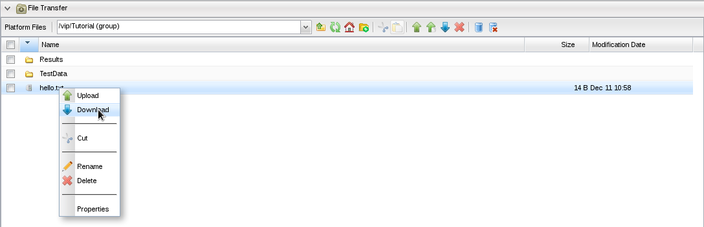
- The file is downloaded in two steps: first from the grid to the portal, then from the portal to your local machine. Click on the download link in the "Pool of Transfers" to get it:
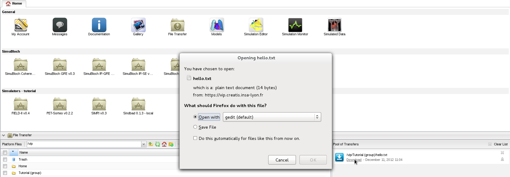
- Open your "Home" folder, create a new directory using , and upload a file using
 . In the backend, the file is uploaded to EGI, and replicated to 3 locations.
. In the backend, the file is uploaded to EGI, and replicated to 3 locations.
- Once uploaded, Refresh your folder to see the file.
Back to top
Exercise 3: X-Ray simulation with Sindbad (10 min)
The Sindbad X-Ray/CT simulator is available in VIP. In this exercise, we will simulate 1 X-Ray projection from the full-body XCAT model.
- In your home tab, open simulator "Sindbad 0.1.4 - local". A form appears, showing the simulation parameters which are described in tooltips:
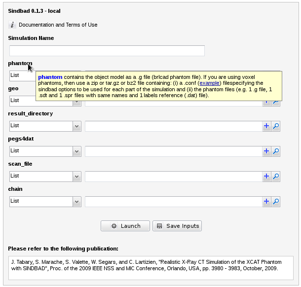
- Load example "XRAY" by clicking on in section Examples; all the inputs are filled in, except the result directory:

- To add a result directory, click on and select your home:
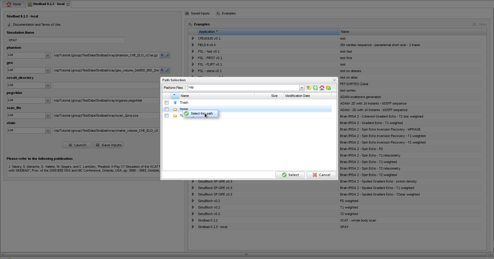
- Click on launch to launch the simulation.
- In your home, open
 to monitor your simulation:
to monitor your simulation:
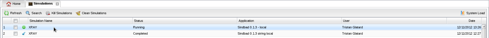
- Click on your simulation. A tab appears showing the progress of the execution:
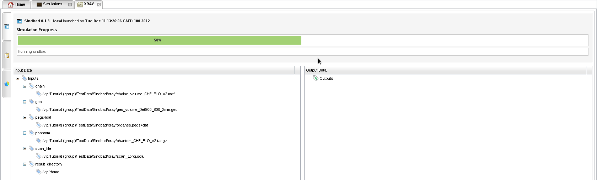
- On the left, tab "Jobs summary" shows information about jobs statuses:
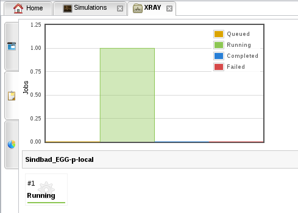
- Known bug: if no simulation job is created after a few minutes, i.e. the "Jobs summary" tab in your simulation still has no job:

- Then kill your simulation and relaunch it using the contextual menu in the simulation monitor:

- When the simulation is finished (this should take around 5 minutes), download the results from the main simulation tab:
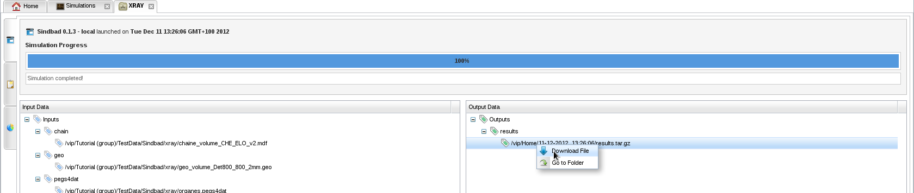
- The simulated image is image_0.mhd/image_0.raw in results.tar.gz. Uncompress results.tar.gz and open image_0.mhd with an image viewer. If you don't have a .mhd viewer installed on your computer, you can use VV (Windows, Linux 64 bits) or medInria (all platforms):
- The simulated image should look like this:
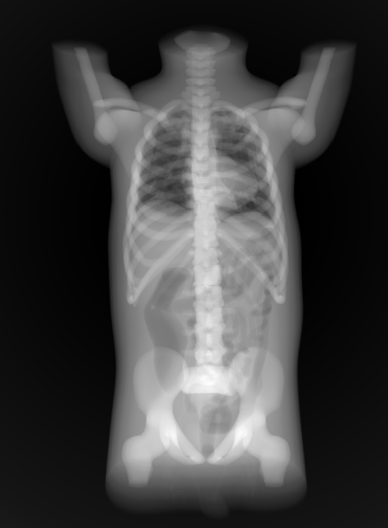
Back to top
Exercise 4: ultrasound simulation (5 min)
The FIELD-II ultrasound simulator is available in VIP. In this exercise, we will simulate a parasternal short-axis echocardiography. As the simulated image is composed of 122 lines and each line requires a few minutes of CPU time, the execution will be parallelized on EGI.
- In your home tab, open simulator "FIELD-II v0.4" and load example "2Dt cardiac sequence - parasternal short axis - 1 frame".
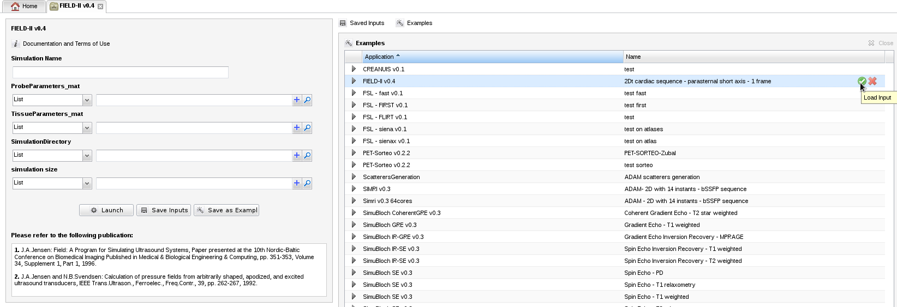
- Launch the simulation and open the simulation monitor. After some time, 6 jobs are submitted: 5 to compute the image lines, and 1 to merge them in a single image:
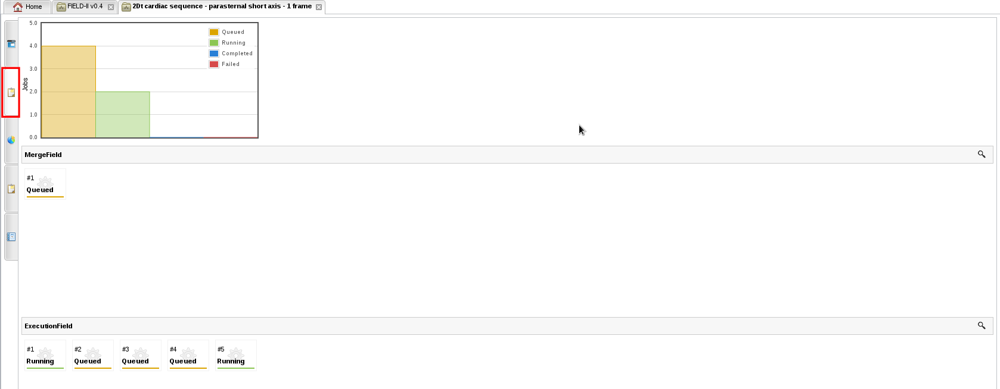
- Known bug: if no simulation job is created after a few minutes, i.e. the "Jobs summary" tab in your simulation still has no job:
- Then kill your simulation and relaunch it using the contextual menu in the simulation monitor:
- The simulation will take some time to complete. We will let it run while we move to exercise 5.
Back to top
Exercise 5: platform administration (demo, 15 min)
In this exercise, we will demonstrate how the platform is monitored and managed by administrators.
The demonstration will consist of managing:
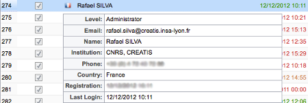
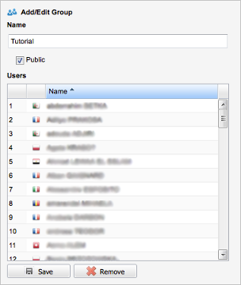


 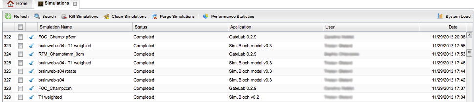
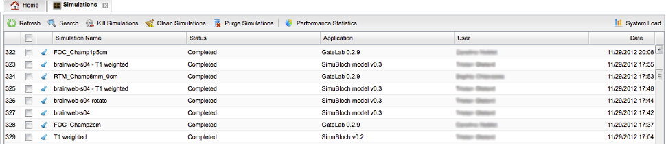
Back to top
Exercise 6: view ultrasound results (5 min)
- Your ultrasound simulation launched in Exercise 4 should now be complete. To visualize its results, download image.mhd and image.raw from the simulation panel accessed from simulation monitor::

- To visualize the simulated image, open image.mhd with an image viewer. If you don't have a .mhd viewer installed on your computer, you can use VV (Windows, Linux 64 bits) or medInria (all platforms).
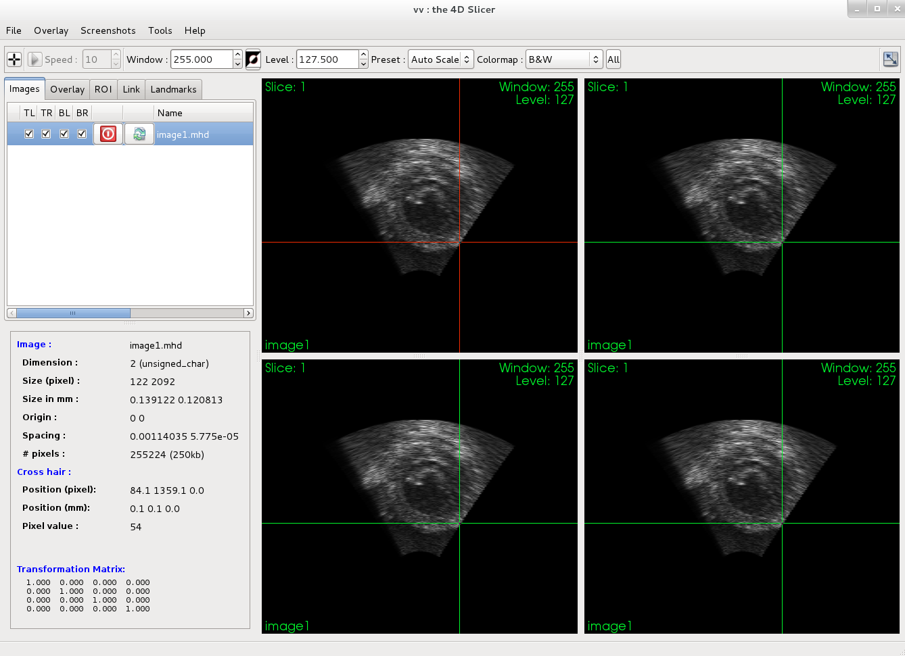
- Open tab "Performance statistics" to view performance statistics about the simulation:

That's it, we hope you enjoyed the session.
Back to top
The Virtual Imaging Platform is a French project funded by ANR under grant ANR-09-COSI-03.
- The grid infrastructure is provided by EGI, with contributions from many National Grid Institutions.
- Administration and support for the DIRAC scheduler is provided by France-Grilles
- The MOTEUR workflow engine is developed at I3S
- FIELD-II is citationware. If you are publishing any work, where this program has been used, please remember that it was obtained free of charge. You must reference the two papers shown \ below and the name of the program Field II must be mentioned in the publication.
- J.A.Jensen: Field: A Program for Simulating Ultrasound Systems, Paper presented at the 10th Nordic-Baltic Conference on Biomedical Imaging Published in Medical & Biological Engineering & Computing, pp. 351-353, Volume 34, Supplement 1, Part 1, 1996.
- J.A.Jensen and N.B.Svendsen: Calculation of pressure fields from arbitrarily shaped, apodized, and excited ultrasound transducers, IEEE Trans.Ultrason., Ferroelec., Freq.Contr., 39, pp. 262-267, 1992.
- Sindbad is developed at CEA-LETI-MINATEC. Access to the simulator has to be specifically requested to Joachim Tabary (joachim.tabary@cea.fr).
- The ultrasound simulation was designed in the US-Tagging project: M. Alessandrini, H. Liebgott, D. Friboulet, and O. Bernard, "Simulation of realilstic echocardiographic sequences for ground-truth validation of motion estimation", IEEE International Conference on Image Processing (ICIP), Orlando, Florida, USA, 2012
- VV is from CREATIS, medInria is from INRIA
- About the VIP platform: "A Virtual Imaging Platform for multi-modality medical image simulation", Tristan Glatard, Carole Lartizien, Bernard Gibaud, Rafael Ferreira da Silva, Germain Forestier, Frédéric Cervenansky, Martino Alessandrini, Hugues Benoit-Cattin, Olivier Bernard, Sorina Camarasu-Pop, Nadia Cerezo, Patrick Clarysse, Alban Gaignard, Patrick Hugonnard, Hervé Liebgott, Simon Marache, Adrien Marion, Johan Montagnat, Joachim Tabary, and Denis Friboulet, IEEE Transactions on Medical Imaging, in press, 2012